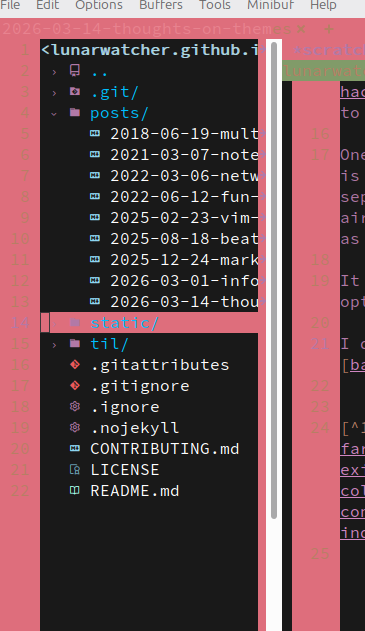

Thoughts on themes

Last week, I had the fun need to ✨ switch from vim to emacs ✨, because vim has fallen to AI slop - a sentence I did not expect to need to say ever, but here we are. This forced me back out to look for themes, which has been a bit of a challenge. I may end up writing something about this in the future, at the very least in the form of TILs. My note strategy has once again changed, so I have some cannon fodder for it.
Anyway, at the time of writing this page, I'm using catppuccin latte, while writing my own theme in another instance of emacs. I mostly like catppuccin, but it's also very bad for contrast, particularly in markdown code blocks not being distinguishable from the background. Having to look through themes again reminded me how much of a pain in the ass this process is.
I'm a light mode user, which means there's significantly fewer themes I can use available - and much fewer well-implemented themes. One thing I have noticed is that there's lots of repos for themes that are actually bundles for themes in vaguely the same style. Before switching to catppuccin, I used doom-themes, and tried two variants, both of which were either low in contrast or appared poorly implemented[1].
Back when I used Vim, I eventually found papercolor-theme, and stuck with it. I eventually forked it when the maintainer disappeared, because maintaining it with the new plugins I was using was easier than finding another, more maintained theme. Papercolor is, and still remains, one of the best-designed light mode themes I have seen.
I did need to combine this with some hacks. I had my modeline theme set to a dark theme for a while, because that was the only way I could maintain contrast. I later switched to a tiny hack that forced the inactive modeline to match the active modeline's style.
One thing that did surprise me about emacs was just how much is theme-dependent. That's both good and bad, I guess. Themes having explicit config options is a nice feature, though it means that a lot of customising needs to be done. The neat part with vim-airline was that it had themes that were entirely separate from the colourscheme, so themes had to be explicitly made for airline. The downside with that is that an arbitrary theme can't provide an airline theme without explicitly knowing that airline exists, but this is already the case with so many plugins in both emacs and vim that it has 0 value as an argument.
It also means that emacs themes can be two different kinds of atrocious at the same time. One plugin that I do not remember the name of anymore had an option to increase the contrast on the modeline by using more vivid colours. It made the text completely fucking unreadable.
I do wonder just how much of that is down to theme bundles. Doom-themes is not the worst example of this - base16, and its 200-something themes is.

Some of the text is readable, but the line numbers and any text in markdown buffers under the cursorline is completely unreadable without a fair bit of effort. Purely based on experience, it feels like the size of a theme repository is inversely related to the quality of each individual theme, because it's assumed the colours in the theme can be described universally in the framework the theme repo usually builds on.
It seems to be harder with just 16 colours shoved into the standard terminal-like framework for colours. Again as a light-mode user, I frequently run into problems where a CLI has decided to use some colour that simply does not work with my specific theme. This has not been as bad since I switched to gnome-light, but when I had to resort to a theme repo, those themes had some problems, especially on ls on an NTFS disk being completely unreadable.
There's not really much of a point to this post. Theming hard, really. What does surprise me is just how dependent I've been on papercolor for the better part of ~6 years or whatever, just because of how few good light mode themes there are in code editors. I have had a few rounds of trying to create a theme, but it has historically ended up badly. I have got a little better at design in the last few years though, and emacs does have the advantage of having less Stuff:tm: that needs to be configured for the builtins, and thereby fewer ways to completely fuck up the palette. We'll see how that turns out though
Footnotes
In their defense though, editors like emacs are really fucking hard to design themes for. A lot of customising has to be done on the theme side (as far as I can tell) for the colours to appear consistent, especially when light mode themes are involved. Even when themes do provide defaults linked to existing standard colours or whatever, it isn't necessarily given that the colour remap for light mode preserves the same contrast, assuming there are colours in the theme able to provide roughly the same contrast. Colour mappings failing happens to the vast majority of themes, and is really a consequence of simple theming mechanisms not being good enough. Redesigning this for the modern era would be a process, though, and not one any individual theme in any individual editor could just do.
Usages: [1]